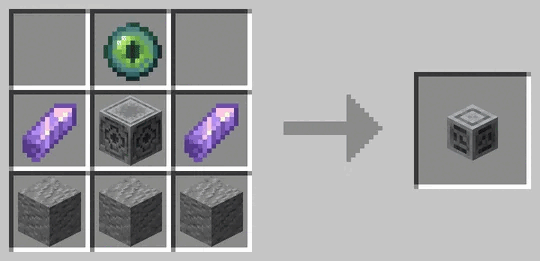
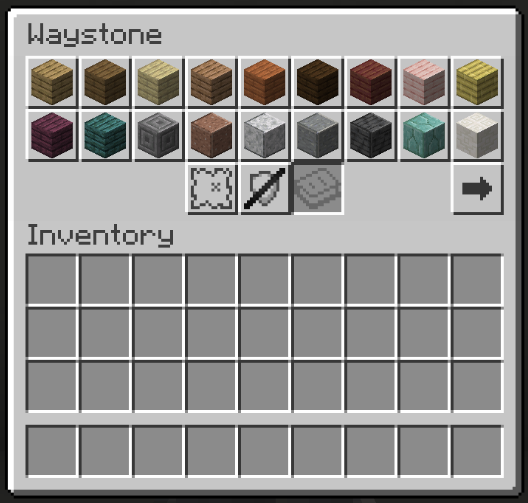
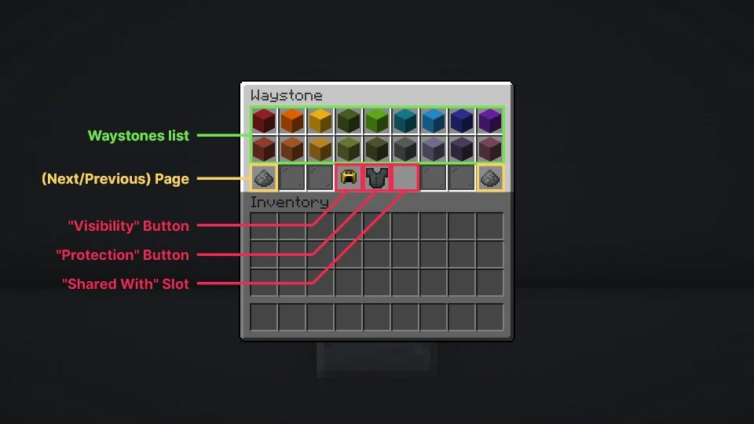

Il existe plusieurs types de Waystones, chacune correspondant à un matériau spécifique et offrant une variation esthétique unique :
Andésite pour la Waystone en Andésite
Grès pour la Waystone de Sable
Nether Brique pour la Waystone du Nether
Brique Moussue pour la Waystone Moussue
Cobbled Deepslate pour la Deepslate Waystone
Bloc de Cuivre pour la Waystone de Cuivre
Brique de Prismarine pour la Waystone en Prismarine
Tuff pour la Waystone en Tuff
Chaque variante permet d’adapter vos points de téléportation à votre environnement ou à votre style de construction, que ce soit pour une base médiévale, une forteresse du Nether ou une cité sous-marine.

Les Waystones servent à vous téléporter vers d’autres Waystones que vous avez découvertes.
Pour les utiliser, il suffit de faire un clic droit sur la Waystone, ce qui ouvre un menu de téléportation vous permettant de choisir votre destination.
Cette fonctionnalité est idéale pour se déplacer rapidement entre vos bases, points stratégiques ou zones explorées, rendant vos voyages plus efficaces et votre exploration beaucoup plus pratique.

Les Waystones disposent également de plusieurs modes et options pour s’adapter à vos besoins :
Vous pouvez définir la visibilité de votre Waystone : Public pour que tout le monde puisse la voir, Découvrable pour qu’elle soit visible uniquement après découverte, ou Privé pour la garder uniquement pour vous.
Il est aussi possible d’activer ou désactiver la protection pour sécuriser votre Waystone contre les interactions non désirées.
Enfin, chaque Waystone dispose d’un slot de recherche qui vous permet de chercher et de sélectionner rapidement d’autres Waystones disponibles pour la téléportation.
Ces fonctionnalités rendent l’utilisation des Waystones flexible et pratique, vous permettant de gérer vos déplacements et vos bases selon votre style de jeu.
